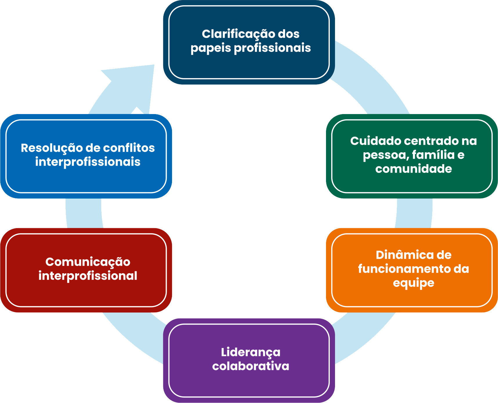

TÓPICO
01
ATUAÇÃO
PROFISSIONAL NA ATENÇÃO PRIMÁRIA À SAÚDE
3.3 Identificando as
competências colaborativas
As competências compreendidas como
essenciais para as práticas interprofissionais colaborativas foram
reunidas em seis
domínios pelo grupo Canadian Interprofessional Health Collaborative (CIHC, 2010). São eles: clarificação
de
papéis
profissionais; cuidado centrado na pessoa, na família e na comunidade; dinâmica de funcionamento da
equipe;
liderança
colaborativa; comunicação interprofissional; e resolução de conflitos interprofissionais.
Clique em cada caixa para aprender cada um:

Clarificação
dos
papeis
profissionais:
Consiste em conhecer o próprio papel, assim como o papel dos demais profissionais da equipe, para que todo o
conhecimento disponível seja oportunamente demandado em prol do cuidado. Ao ser colocada em prática, essa
competência,
além de prover esclarecimento acerca dos papeis de cada profissional, pode proporcionar: o reconhecimento e
respeito à
diversidade de pensamento dos outros profissionais; atenção ao papel dos demais ao determinar seu próprio
papel
para o
trabalho integrado; integração do outro na dinâmica do próprio trabalho.
Cuidado
centrado na
pessoa, família e comunidade:
Requer que cada membro da equipe busque valorizar e incorporar a lógica do envolvimento do usuário, família
e
comunidade
na concepção e implementação de cuidados e serviços oferecidos. Envolve apoiar a participação do usuário,
família e
comunidade na produção do cuidado em saúde; compartilhar informações de forma adequada, compreensível e
respeitosa;
estabelecer escuta respeitosa diante das necessidades apresentadas.
Dinâmica de
funcionamento da equipe:
Pressupõe o estabelecimento de princípios para o trabalho em equipe, pautado em valores éticos que assegurem
um
ambiente
favorável para discussões efetivas e interação entre os membros da equipe. Assim, as tomadas de decisões
poderão
realizadas de forma colaborativa.
Liderança
colaborativa:
Essa competência apoia-se na liderança e tomada de decisão compartilhada, mas também implica na
responsabilidade
individual e contínua de cada profissional, por suas próprias ações, responsabilidades e atribuições.
Fundamenta-se no
avanço das relações de trabalho interdependente entre membros da equipe para tornar processos e tomada de
decisão mais
eficazes. Deve ser pautada no estabelecimento de um clima de prática colaborativa com cocriação de um clima
para
liderança compartilhada e prática colaborativa.
Comunicação
interprofissional:
O desenvolvimento dessa competência proporciona uma comunicação colaborativa, ágil e responsável entre as
diferentes
profissões. Para apoiar a prática colaborativa interprofissional, é necessário estabelecer princípios de
comunicação
para o trabalho em equipe. Inclui ouvir ativamente outros membros da equipe e também usuários e suas
famílias,
para
garantir um entendimento comum das decisões acerca do cuidado. Estabelecer comunicação efetiva entre membros
da
equipe,
entre equipe e usuários e famílias é fundamental para o desenvolvimento de relações de confiança.
Resolução de
conflitos interprofissionais:
Todos atuam positivamente e de forma construtiva para lidar com as divergências à medida que elas se
apresentam,
tanto
nas relações entre profissionais, quanto nas relações com usuários/ família/comunidade. Assim, uma abordagem
construtiva
a conflitos que emergem, inclui: identificar situações comuns que podem levar a desacordos, incluindo
ambigüidade de
papéis, disputas de poder e divergências de objetivos; analisar as causas de qualquer conflito, estabelecer
estratégias
de abordagem e tomar medidas para resolução; definir diretrizer para lidar com divergências. Atenção a essa
competência,
pois ela potencializa o estabelecimento de um ambiente seguro para manifestação de opiniões diversas e o
establecimento
de consenso a partir de pontos de vista divergentes, de modo que todos se sintam contemplados (ouvidos),
independente do
resultado.